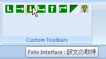

Felixチュートリアル：MSワードで使う¶
ここでは、FelixのMSワードでの使い方を説明します。
「Felix」を起動して、Wordで翻訳するファイルを開きます。

Word 2007以降だったら、Add-Insタブを表示します。[Felix] メニューから [次の文の選択] を選択するか、ツールバーの「→」ボタンをクリックします。

メニューでの選択

ツールバーのボタン
最初の文節が選択され、Felixで検索されます。この時点では、FelixのTM（翻訳メモリ）が開いていないため、一致がありません。

ワードで選択されます

Felixでの表示
原文を上書きして訳します。
翻訳が終わったら、カーソルを訳文の最後において、Felixのツールバーから、「↑」ボタンをクリックします。

メニューでの選択

ツールバーのボタン
これで現在の翻訳対象（照会）の訳文が登録され、Felixのウィンドウで表示されます。

ワードで選択されます

Felixの画面で表示されます
「Felix」→「次の文の検索」を選択します。あるいは、ツールバーの「→」ボタンをクリックします。原文の選択・検索が行われます。
FelixのTM（メモリ）には検索対象（原文）と一致する（あるいは似ている）原文があれば、その原文と対応する訳文がFelixのウィンドウで表示されます。

Felixでの表示
訳文を取得するには、原文がワードで選択されたまま、Felixのメニューから「訳文の取得」を選択するか、ツールバーの「↓」ボタンをクリックします。

メニューでの選択

ツールバーのボタン
訳文は原文を上書きして、文書に挿入されます。

訳文が取得されます
上記のように、完全一致ではなくファジーマッチ（非常に似ている原文）の場合、必要に応じて訳文を編集して、新規訳文として登録します。詳細について、上記のステップ３を参照してください。

Felixでの表示
繰り返し、次の文節を検索して訳します。